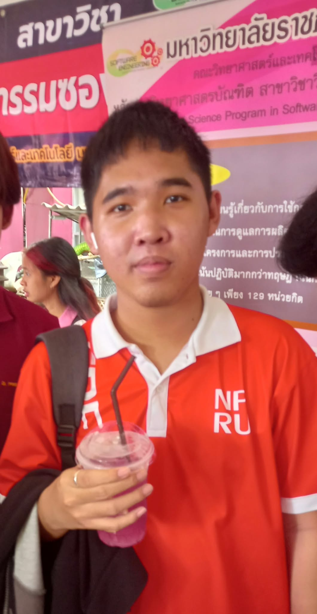

สวัสดีครับ ผม นิค นาย ธีรพงศ์ มีความสนใจและหลงใหลในการพัฒนาเว็บไซต์ส่วนหน้า (Frontend Development) มุ่งมั่นที่จะสร้างสรรค์หน้าเว็บที่สวยงาม ตอบสนองการใช้งานได้ดีทุกอุปกรณ์ (Responsive Design) และส่งมอบประสบการณ์การใช้งานที่ดีเยี่ยมให้กับผู้ใช้
ตำแหน่งที่สนใจ: Frontend Development (การพัฒนาส่วนหน้าเว็บ)
จุดเด่น: พร้อมเปิดรับเทคโนโลยีใหม่ๆ และใส่ใจในรายละเอียดของการจัด UX/UI